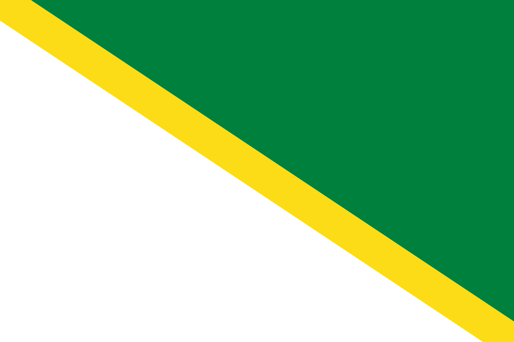
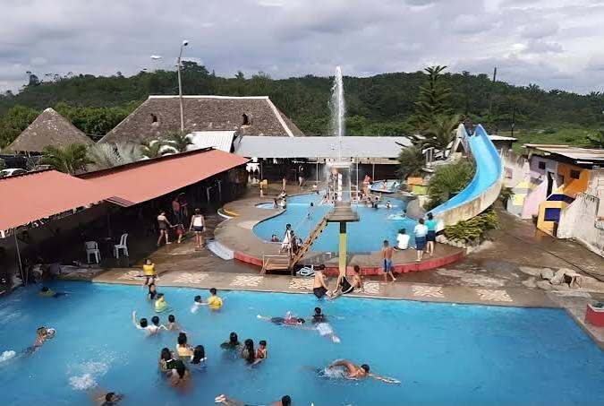
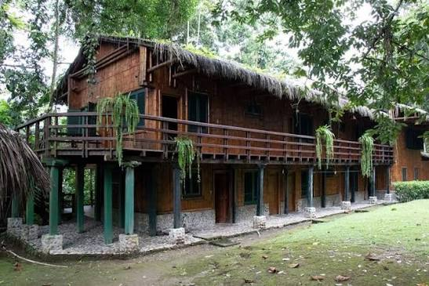
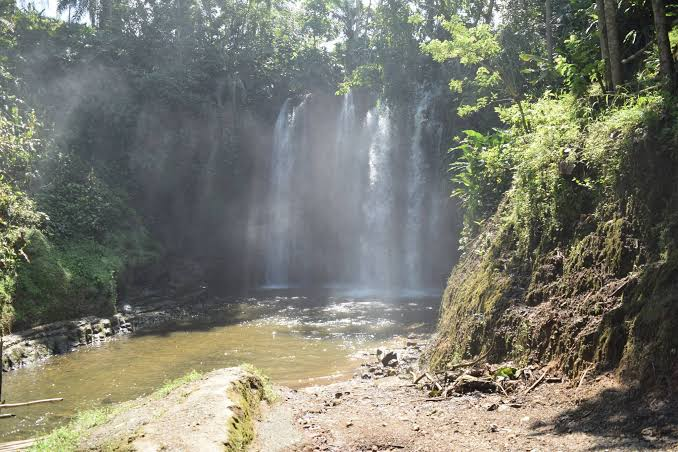
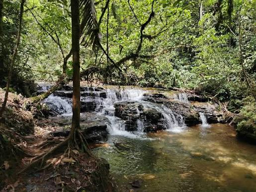
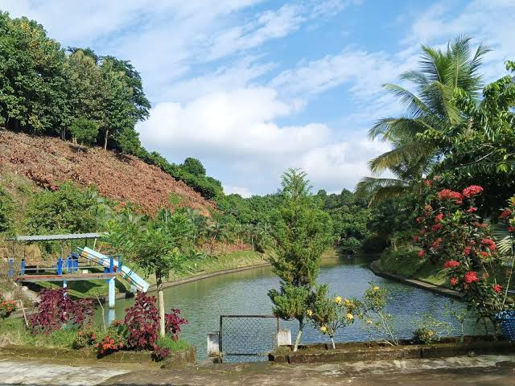
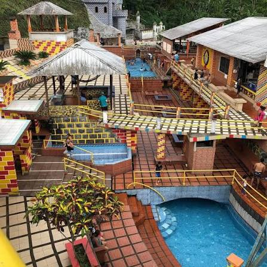
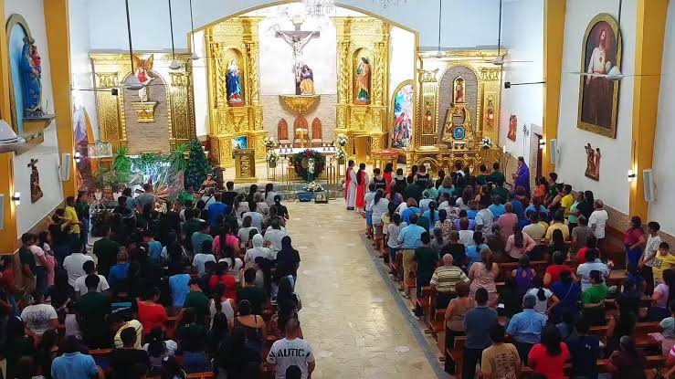

El cantón Buena Fe está ubicado en la provincia de Los Ríos, Ecuador. Sus orígenes como poblado se relacionan con la década de 1940, cuando Medardo Espinoza Cabezas y su esposa, Rosa Figueroa Carrillo, establecieron una pequeña tienda que dio origen al nombre de la localidad. Fue parroquia rural de Quevedo desde el 11 de octubre de 1979 y se convirtió en cantón el 7 de agosto de 1992. Se caracteriza por su actividad agrícola, ganadera y comercial, destacándose la producción de cacao, café, palma africana y frutas tropicales.

Es uno de los atractivos más conocidos del cantón. Es visitado por su río, sus espacios naturales y sus actividades recreativas, como las competencias de vehículos 4x4.

Es importante porque conserva un bosque tropical con gran variedad de plantas y animales. También cuenta con una estación experimental de plantas medicinales.

Es turística por su caída de agua, sus formaciones rocosas y su hermoso entorno natural. Es un lugar apropiado para disfrutar del paisaje y realizar caminatas.

Es un atractivo natural que llama la atención por sus caídas de agua y su vegetación. Es visitado por quienes buscan disfrutar de la tranquilidad y la naturaleza.

Es visitado por sus espacios recreativos, piscinas y paisajes naturales, donde las familias pueden descansar y disfrutar de actividades al aire libre.

Es turístico porque cuenta con piscinas, toboganes y juegos infantiles, ofreciendo un espacio para la diversión y el entretenimiento familiar.

Es un lugar de interés religioso y cultural porque representa la fe y las tradiciones de sus habitantes. Su historia está relacionada con el patrono del cantón, San Jacinto.

La actual alcaldesa del cantón Buena Fe es la abogada Diana Catalina Anchundia Yépez, quien ejerce sus funciones durante el período 2023-2027. Está encargada de dirigir la administración municipal y promover obras y proyectos para el desarrollo y bienestar de sus habitantes.
Según el Censo de Población y Vivienda de 2022 del INEC, el cantón Buena Fe cuenta con 74.410 habitantes.
 Volver al índice principal
Volver al índice principal